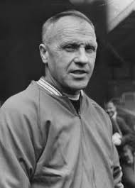
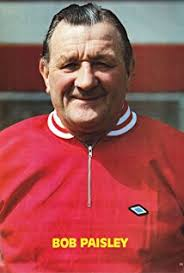

Liverool football club have been blessed with any really great managers over the years. The manager that is best known for turning the football club into the European Giant it is today, was Bill Shankly. He joined the club in December 1959. Liverpool had been in the English 2nd division for 5 years when he took over. He set about changing the club from the inside out, investing in training facilities and investing in the stadium. He was the mnager that laid the foundations for liverpool to become giants of European football and dominate both Europe and England for years to come.
 After Bill retired, his assistant, Bob Paisley then took the reigns. It was under Bob's management that Liverpool football club had their most successful period in Europe and domestically. In the nine years that Bob was manager, Liverpool won 20 major trophies, including 6 league cahmpionships and 3 European cups.